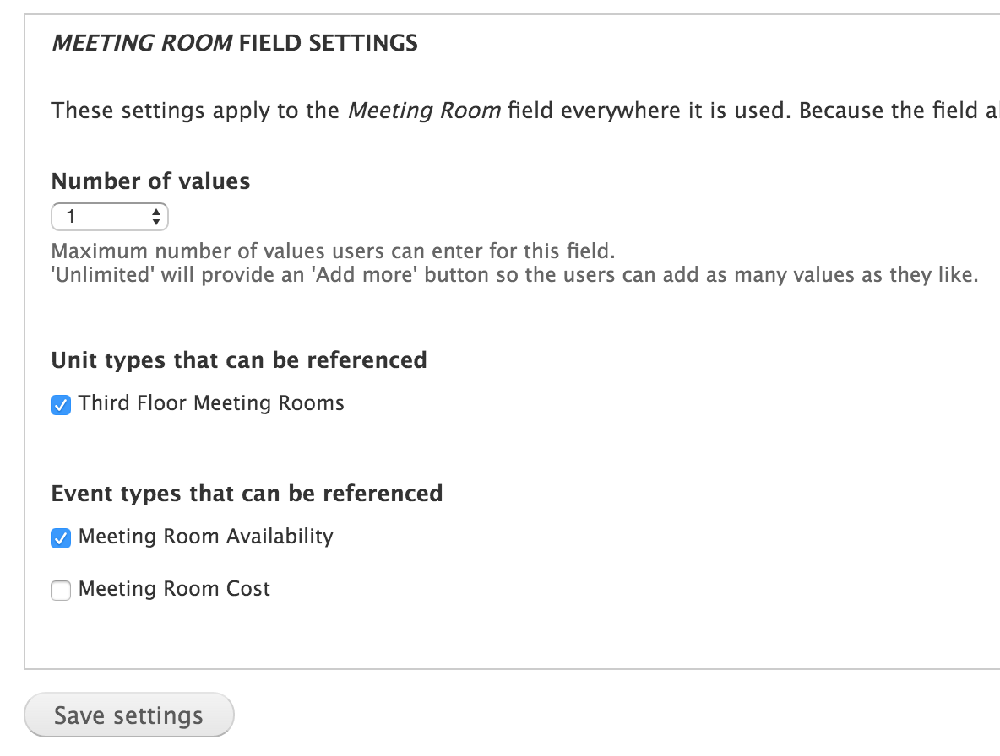
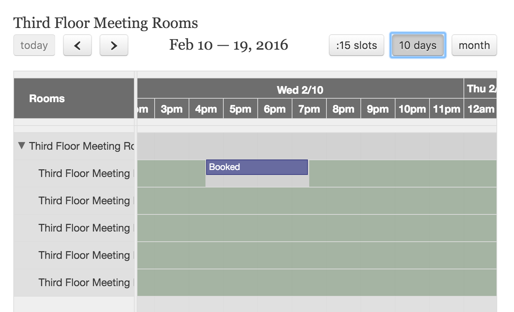
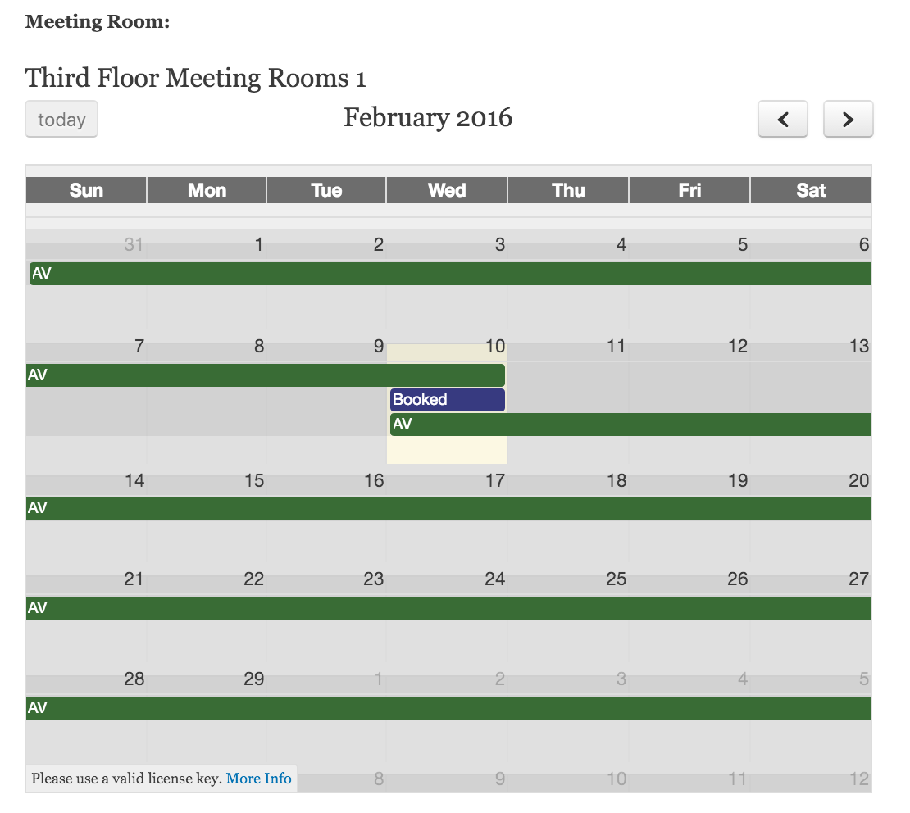

Displaying Availability¶
To display availability on the front-end of your Drupal site, there are two fields you can use which are provided by the BAT Calendar Reference module included in the BAT project.
BAT Calendar Unit Reference¶
BAT Calendar unit reference allows you to reference one or more units, for a certain type and event type.
BAT Calendar Unit Type Reference¶
BAT Calendar unit type reference allows you to reference one or more types for a certain event type.

These fields allow you to display either a scheduler-style timeline or a calendar view.
Timeline View¶
Agenda / Month View
Interacting with Calendars¶
These calendars are currently display-only. You cannot interact with the events (that can only happen on the administration side of things); however, by changing the widgets at the code level you can easily make them interactive - Roomify is available for commercial services or enterprise support around the use of BAT